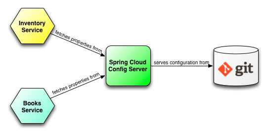
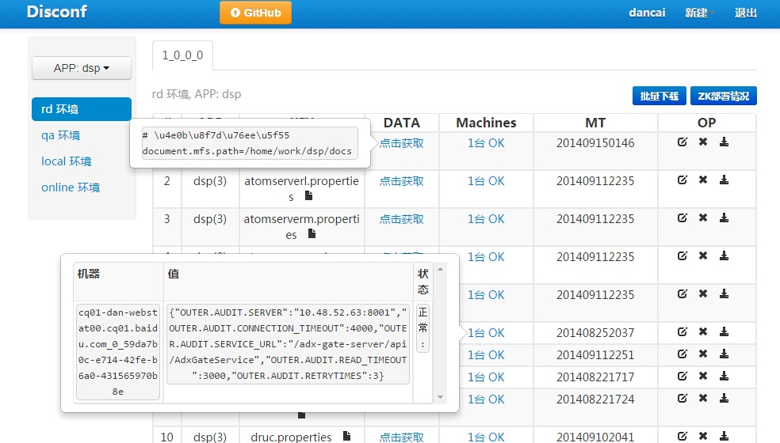
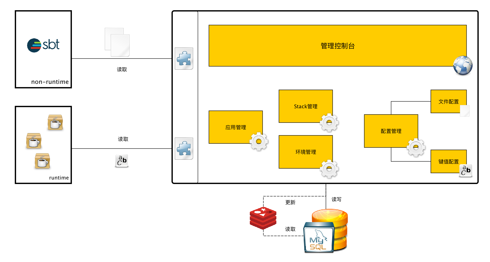

<!DOCTYPE HTML>
<html>
<head><meta name="generator" content="Hexo 3.9.0">
  <meta charset="utf-8">
  <meta http-equiv="X-UA-Compatible" content="IE=edge">
  <meta name="apple-mobile-web-app-capable" content="yes">
  <meta name="apple-mobile-web-app-status-bar-style" content="black">
  <meta name="google-site-verification" content>
  
  <title>微服务化改造系列之三：配置中心</title>
  <meta name="author" content="Emac">
   <meta name="description" content="前情概要：

微服务化改造系列之一：总览
微服务化改造系列之二：服务注册中心


配置中心概述这篇文章是微服务化改造系列的第三篇，主题是配置中心。上一篇我们谈到服务注册中心，即通过提供某种注册和发现的机制，解决服务互通的问题。那么问题来了，一个服务如何知道服务注册中心的地址呢？这就涉及到服务配置了。">
  

  <meta property="og:title" content="微服务化改造系列之三：配置中心">
  <meta name="viewport" content="width=device-width, initial-scale=1, maximum-scale=1">
  <meta property="og:site_name" content="Emac">
 <meta property="og:image" content="undefined">
  
  <link href="/apple-touch-icon-precomposed.png" sizes="180x180" rel="apple-touch-icon-precomposed">
  <link rel="alternate" href="/atom.xml" title="Emac" type="application/atom+xml">
  <link rel="stylesheet" href="//cdn.bootcss.com/bootstrap/3.3.6/css/bootstrap.min.css">
  <link rel="stylesheet" href="//cdn.bootcss.com/font-awesome/4.5.0/css/font-awesome.min.css">
  <link rel="stylesheet" href="/css/m.min.css">
  <link rel="icon" type="image/x-icon" href="/favicon.ico">
</head>
</html>
<body>
  <div id='wx_pic' style='display:none;'></div>
  <div id="main">
    <div class="behind">
      <div class="back">
        <a href="/" class="black-color"><i class="fa fa-times" aria-hidden="true"></i></a>
      </div>
      <div class="description">
        &nbsp;拾贝
      </div>
    </div>
    <div class="container">
      

  <article class="standard post">
    <div class="title">
      
  
    <h1 class="page-title center">
        微服务化改造系列之三：配置中心
    </h1>
  


    </div>
    <div class="meta center">
      
<time datetime="2016-11-26T16:00:00.000Z">
  <i class="fa fa-calendar"></i>&nbsp;
  2016-11-27
</time>


    
    &nbsp;
    <i class="fa fa-tag"></i>&nbsp;
    <a href="/categories/arch/">arch</a>


    
    &nbsp;
    <i class="fa fa-tag"></i>&nbsp;
    <a href="/tags/原创/">原创</a>·<a href="/tags/微服务/">微服务</a>


    </div>
    <hr>
    <div class="picture-container">
      
    </div>
    <blockquote>
<p>前情概要：</p>
<ul>
<li><a href="http://emacoo.cn/arch/microservice-overview">微服务化改造系列之一：总览</a></li>
<li><a href="http://emacoo.cn/arch/microservice-registry-center/">微服务化改造系列之二：服务注册中心</a></li>
</ul>
</blockquote>
<h2 id="配置中心概述"><a href="#配置中心概述" class="headerlink" title="配置中心概述"></a>配置中心概述</h2><p>这篇文章是微服务化改造系列的第三篇，主题是配置中心。上一篇我们谈到服务注册中心，即通过提供某种注册和发现的机制，解决服务互通的问题。那么问题来了，一个服务如何知道服务注册中心的地址呢？这就涉及到服务配置了。我们知道，大至一个PaaS平台，小至一个缓存框架，一般都依赖于特定的配置以正常提供服务，微服务也不例外。</p>
<h3 id="配置分类"><a href="#配置分类" class="headerlink" title="配置分类"></a>配置分类</h3><ul>
<li>按配置的来源划分，主要有源代码（俗称hard-code），文件，数据库和远程调用。</li>
<li>按配置的适用环境划分，可分为开发环境，测试环境，预发布环境，生产环境等。</li>
<li>按配置的集成阶段划分，可分为编译时，打包时和运行时。编译时，最常见的有两种，一是源代码级的配置，二是把配置文件和源代码一起提交到代码仓库中。打包时，即在应用打包阶段通过某种方式将配置（一般是文件形式）打入最终的应用包中。运行时，是指应用启动前并不知道具体的配置，而是在启动时，先从本地或者远程获取配置，然后再正常启动。</li>
<li>按配置的加载方式划分，可分为单次加载型配置和动态加载型配置。</li>
</ul>
<h3 id="演变"><a href="#演变" class="headerlink" title="演变"></a>演变</h3><p>随着业务复杂度的上升和技术架构的演变，对应用的配置方式也提出了越来越高的要求。一个典型的演变过程往往是这样的，起初所有配置跟源代码一起放在代码仓库中；之后出于安全性的考虑，将配置文件从代码仓库中分离出来，或者放在CI服务器上通过打包脚本打入应用包中，或者直接放到运行应用的服务器的特定目录下，剩下的非文件形式的关键配置则存入数据库中。上述这种方式，在单体应用阶段非常常见，也往往可以运行的很好，但到了微服务阶段，面对爆发式增长的应用数量和服务器数量，就显得无能为力了。这时，就轮到配置中心大显身手了。那什么是配置中心？简单来说，就是一种统一管理各种应用配置的基础服务组件。</p>
<h2 id="框架选型"><a href="#框架选型" class="headerlink" title="框架选型"></a>框架选型</h2><p>选型一个合格的配置中心，至少需要满足如下4个核心需求：</p>
<ul>
<li>非开发环境下应用配置的保密性，避免将关键配置写入源代码</li>
<li>不同部署环境下应用配置的隔离性，比如非生产环境的配置不能用于生产环境</li>
<li>同一部署环境下的服务器应用配置的一致性，即所有服务器使用同一份配置</li>
<li>分布式环境下应用配置的可管理性，即提供远程管理配置的能力</li>
</ul>
<p>现在开源社区主流的配置中心框架有Spring Cloud Config和disconf，两者都满足了上述4个核心需求，但又有所区别。</p>
<h3 id="Spring-Cloud-Config"><a href="#Spring-Cloud-Config" class="headerlink" title="Spring Cloud Config"></a>Spring Cloud Config</h3><p></p>
<p><a href="http://cloud.spring.io/spring-cloud-static/spring-cloud.html#_spring_cloud_config" target="_blank" rel="noopener">Spring Cloud Config</a>可以说是一个为Spring量身定做的轻量级配置中心，巧妙的将应用运行环境映射为profile，应用版本映射为label。在服务端，基于特定的外部系统（Git、文件系统或者Vault）存储和管理应用配置；在客户端，利用强大的Spring配置系统，在运行时加载应用配置。</p>
<h3 id="disconf"><a href="#disconf" class="headerlink" title="disconf"></a>disconf</h3><p></p>
<p><a href="http://disconf.readthedocs.io/zh_CN/latest/index.html" target="_blank" rel="noopener">disconf</a>是前百度资深研发工程师廖绮绮的开源作品。在服务端，提供了完善的操作界面管理各种运行环境，应用和配置文件；在客户端，深度集成Spring，通过Spring AOP实现应用配置的自动加载和刷新。</p>
<h2 id="最终方案"><a href="#最终方案" class="headerlink" title="最终方案"></a>最终方案</h2><p>不管是Spring Cloud Config还是disconf，默认提供的客户端都深度绑定了Spring框架，这对非Spring应用而言无疑增加了集成成本，即便它们都提供了获取应用配置的API。最终我们还是选用了微服务化改造之前自研的Matrix作为配置中心，一方面，可以保持新老系统使用同一套配置服务，降低维护成本，另一方面，在满足4个核心需求的前提下，Matrix还提供了一些独有的能力。</p>
<ul>
<li>分离配置文件和配置项。对于配置文件，通过各类配套打包插件（sbt, maven, gradle），在打包时将配置文件打入应用包中，同时最小化对CI的侵入性；对于配置项，提供SDK，帮助应用从服务端获取配置项，同时支持简单的缓存机制。</li>
<li>增加应用版本维度，即对于同一应用，可以在服务端针对不同版本或版本区间维护不同的应用配置。</li>
<li>应用配置的版本化支持，类似于Git，可以将任一应用配置回退到任一历史版本。</li>
</ul>
<p>进一步信息可参考我之前写的Matrix<a href="https://www.zybuluo.com/emac/note/241756" target="_blank" rel="noopener">设计文档</a>。</p>
<p></p>
<p><em>Matrix架构图</em></p>
<p>下一篇我将给大家介绍微服务架构的另一个基础组件——授权中心，敬请期待！</p>
<h2 id="参考"><a href="#参考" class="headerlink" title="参考"></a>参考</h2><ul>
<li><a href="http://cloud.spring.io/spring-cloud-static/spring-cloud.html#_spring_cloud_config" target="_blank" rel="noopener">Spring Cloud Config</a></li>
<li><a href="http://disconf.readthedocs.io/zh_CN/latest/index.html" target="_blank" rel="noopener">disconf</a></li>
<li><a href="https://www.zybuluo.com/emac/note/241756" target="_blank" rel="noopener">Matrix</a></li>
</ul>


  </article>
  </script>


    </div>
  </div>
  <footer class="page-footer"><div class="clearfix">
</div>
<div class="right-foot container">
    <div class="firstrow">
        <a href="#top" >
        <i class="fa fa-arrow-right"></i>
        </a>
        © emacoo.cn 2015-2022
    </div>
    <div class="secondrow">
        <a href="https://github.com/gaoryrt/hexo-theme-pln">
        
        </a>
    </div>
</div>
<div class="clearfix">
</div>
<script async src="//busuanzi.ibruce.info/busuanzi/2.3/busuanzi.pure.mini.js"></script>
<div class="busuanzi center">
    <span id="busuanzi_container_site_pv">本站总访问量<span id="busuanzi_value_site_pv"></span>次</span>
    <span id="busuanzi_container_site_uv">本站访客数<span id="busuanzi_value_site_uv"></span>人次</span>
    <span id="busuanzi_container_page_pv">
      本文总阅读量<span id="busuanzi_value_page_pv"></span>次
    </span>
</div>
</footer>
  <script src="//cdn.bootcss.com/jquery/2.2.1/jquery.min.js"></script>
<script src="/js/search.js"></script>
<script type="text/javascript">

// comments below to disable loading animation
function revealOnScroll() {
  var scrolled = $(window).scrollTop();
  $(".excerpt, .index-title, .index-meta, p").each(function() {
    var current = $(this),
      height = $(window).outerHeight(),
      offsetTop = current.offset().top;
    (scrolled + height + 50 > offsetTop) ? current.addClass("animation"):'';
  });
}
$(window).on("scroll", revealOnScroll);
$(document).ready(revealOnScroll)

// disqus scripts


// dropdown scripts
$(".dropdown").click(function(event) {
  var current = $(this);
  event.stopPropagation();
  $(current).children(".dropdown-content")[($(current).children(".dropdown-content").hasClass("open"))?'removeClass':'addClass']("open")
});
$(document).click(function(){
    $(".dropdown-content").removeClass("open");
})

// back to top scripts
$("a[href='#top']").click(function() {
  $("html, body").animate({ scrollTop: 0 }, 500);
  return false;
});


var path = "/search.xml";
searchFunc(path, 'local-search-input', 'local-search-result');

</script>

</body>
</html>
